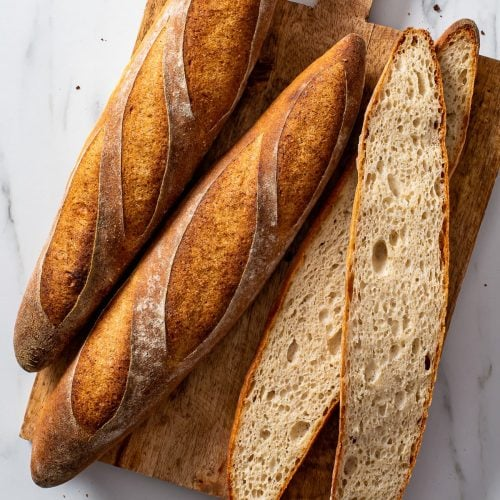

Probably the most iconic image of France, this long, light, airy bread with its characteristically crispy crust dates back to the 19th century, when wheat and white breads were no longer a privilege of the rich. Baguettes were made even before the invention of their name.
Meal prep time : 3 hour 5 minutes
Servings : 12